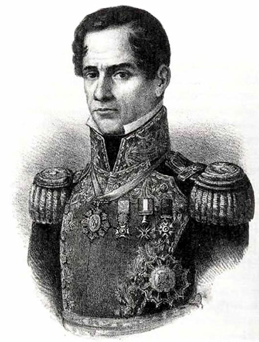

Instituto Técnico Honduras

Batalla del Álamo
Antonio López de Santa Anna

Antonio de Padua María Severino López de Santa Anna y Pérez de Lebrón (Xalapa, 21 de febrero de 1794-Ciudad de México, 21 de junio de 1876) conocido como Antonio López de Santa Anna, fue un político, militar y dictador mexicano. Fue presidente de México y, aunque en la gran mayoría de textos se dice que ocupó la presidencia en once ocasiones, el Instituto Nacional de Estudios Históricos de las Revoluciones de México (INEHRM) sostiene que solo fueron seis veces. Esto en gran medida, porque en las ocasiones que fue electo como titular del cargo, solicitó múltiples licencias para abandonarlo, para luego reincorporarse con la misma constancia.
La confusión histórica es producto de las diversas fuentes que separan o unifican los lapsos de ejercicio de la presidencia. La explicación es la siguiente: Electo constitucionalmente para el periodo de 1833-1837 (bajo la carta magna de 1824), tan solo en su primer año de gobierno pidió cuatro licencias para ausentarse del cargo, entre estas y los interinatos de Valentín Gómez Farías acumuló cuatro ingresos a la primera magistratura; no obstante se trataron de licencias múltiples en un mismo periodo como titular. Su quinto (1839), sexto (1841) y séptimo (1843) regreso fueron como presidente interino o provisional, casi siempre apoyado por grupos políticos contrarios a los gobiernos legalmente constituidos que habían sido derrocados.
Bajo el documento fundamental de las Bases orgánicas, que sustituyó a las Siete Leyes, se produjo su octava presidencia, ya que fue electo constitucionalmente para el periodo 1844-1849, en este lapso, y en medio de la invasión de Estados Unidos, solicitó licencia en dos ocasiones para encabezar al ejército en la contienda, regresando en esas mismas ocasiones para su noveno y décimo mandato (ambos en 1847). Su último y más largo período, el undécimo (1853-1855), tuvo lugar luego de ser instalado por el golpe de Estado contra Mariano Arista. Se erigió como dictador vitalicio con el tratamiento de Alteza Serenísima en 1853, pero fue derrocado dos años más tarde. A lo largo de su extensa carrera política fue considerado ambiguo por participar en partidos contrarios, ya fuera con realistas, monárquicos, republicanos, unitarios, federales, liberales o conservadores. Santa Anna fue también gobernador de Yucatán (1824-1825) y de Veracruz en 1829.